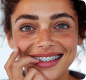

Щёлкает или болит височно-нижнечелюстной сустав? Не знаете к кому обратиться?
Найдём оптимальный вариант лечения для любой клинической ситуации
без лишних трат
У нас классные врачи, современное оборудование и красивый интерьер.
Но это не главное.
Красивая улыбка и здоровье
с минимум усилий
Вот, что на самом деле важно
Понятные цены без скрытых условий
Рассчитать в калькуляторе
Уложимся в сроки
Или долечим бесплатно
Скачать гарантию срока лечения
Медицинская аналитика по 43 параметрам
Пример диагностики
уровня погружения в ортодонтию
На ваш выбор
Срок лечения на 27% короче
Оптимизированные планы и протоколы
Стабильный результат навсегда
Условия гарантии

Специализируемся на сложных случаях

Рациональность и ваши интересы
В основе лечения
Комфортная атмосфера
Только для взрослых
Сравним все возможные варианты лечения
Врачи всегда на связи
С вами
Друг с другом

Вариативность лечения
На любой бюджет
Выбрать тариф
Подход Orteam к лечению ДВНЧС
Принцип разумной достаточности главный в лечении дисфункции ВНЧС в Orteam. Этот раздел медицины
традиционно дорогой, начиная с диагностики и заканчивая финальным протезированием. И ортодонты,
и ортопеды Orteam в равной мере работают с ВНЧС, что позволяет оптимизировать лечение за счёт
корректного определения причин дисфункции и выбора наиболее подходящего способа лечения.
Каждый клинический случай обсуждается коллегиально. Лечение ВНЧС может быть как исключительно
ортодонтическим, так и только ортопедическим или комплексным.

Диагностика
В рамках диагностиики мы:
- Анализируем состояние зубов и прикуса
- Оцениваем состояние суставов и движения нижней челюсти
- Анализируем КТ (в первую очередь, состояние суставных головок)
- МРТ (суставной диск и связки)
- Моделируем движение челюсти в виртуальном или аналоговом артикуляторе
Лечение ДВНЧС
Ортодонты и ортопеды Orteam в равной мере работают с ВНЧС, что позволяет корректно определить
причины ДВНЧС и выбрать наиболее подходящий способ лечения.
Каждый клинический случай обсуждается коллегиально. Лечение ВНЧС может быть как исключительно
ортодонтическим, так и только ортопедическим или комплексным. Сплинт-терапия может проводиться
как до, так и после ортодонтического лечения, но всегда перед постоянным протезированием.
При необходимости, в процессе проводится ТЭНС-терапия.
Причины ДВНЧС
Стоматологические
Нестоматологические
Стоматологические причины
Стоматологические причины, приводящие к травматической перегрузке ВНЧС
- Ортодонтическиие
Неправильный прикус в различных проявлениях
-
Ортопедические
Отсутствие или разрушение/стираемость зубов
-
Ятрогенные
Пломбы или коронки имеют неправильную высоту и не дают челюстям правильно смыкаться либо препятствуют физиологическим движениям.
Нестоматологические причины
- Травма ЧЛО
- Инфекционные заболевания
- Аутоимунные заболевания

Этапы лечения ДВНЧС

Ортодонтическое лечение
- В случае, если проблемы с ВНЧС были связанны с неправильным прикусом или положением нижней челюсти.>
- В некоторых случаях, ортодонтия проводится без предварительного ношения сплинта.
1 этап
2 этап
3 этап
4 этап
Консультацияа
- У ортодонта или ортопеда Orteam
- Иногда может понадобиться повторная консультация
- На этом приёме выдаётся направление на МРТ ВНЧС.
Диагностикая
- Ортопедическая или ортодонтическая, в зависимости от ситуации.
Сплинт-терапия
- Ношение пластинки-сплинта в течение 2–6 месяцев для определения оптимального положения нижней челюсти и устранения нагрузки с мышц и ВНЧС.
Ортопедическое лечение
- Восполнение отсутствующих зубов или восстановление стираемости с помощью протезирования. Нормализация высоты прикуса.
- Может проводиться как само по себе, так и в рамках комплексного лечения после ортодонтии.
Признаки и симптомы ДВНЧС
Самые распространённые симптомы
Хруст, щелчки и боли в области козелка при открывании рта
Дополнительные
- Шум в ушах
- Скованность и напряжение жевательных мышц
- Изменение смыкания зубов (кажется, что зубные ряды перестали подходить друг другу)
- Ноющие боли в лице
- Головные боли (в основном в области висков)
- Ноющие боли в области ушей
- Неспособность широко открыть рот
Стоимость лечения ДНВЧС в Orteam
Стоимость лечения дисфункции ВНЧС достаточно сильно варьирует, в зависимости от причины патологии
и способа лечения.
Предварительная стоимость и план лечения озвучивается на консультации и затем уточняются
после составления плана лечения.
Консультация гнатолога
1 500 ₽
Диагностика ортопедическая с использованием артикулятора
10 000 ₽
Изготовление сплинта
35 000 ₽
Контрольный осмотр в процессе ношения сплинта
1 000 ₽
ТЭНС — терапия (1 сеанс)
2 500 ₽

Запишитесь на приём
Оставьте контакты, и мы свяжемся с вами
в ближайшее время
Или свяжитесь с нами прямо сейчас


Стандарты лечения Orteam
Углублённая диагностика для каждого
Проанализируем исходную ситуацию, от кариесов до состояния ВНЧС и дыхательных путей
Обсуждение хода лечения на консилиумах
Проводим еженедельные консилиумы, разбираем сложные случаи, новые протоколы и методы лечения
Чорный Роман Владимирович
Стоматолог-ортодонт
Нивелируем человеческий фактор
Ключевые этапы, такие как план лечения или непрямая фиксация, проходят двухуровневую проверку
Лечение под контролем ведущего ортодонта
За ход, сроки и результаты лечения каждого пациента отвечает главный врач клиники
Отзывы


Виктория Т.
Август, 2023
В этой клинике я проходила ортодонтическое лечение. Брекеты мне
поставили 2 года назад и вот уже через пару дней поеду снимать. Я осталась в восторге! Прекрасное
здание, внутри современный интерьер, полностью оборудованные кабинеты, даже одноразовые зубные щётки в
туалетах. Встречалась с несколькими врачами на разных процедурах и ни один из них не вызвал у меня ни
доли сомнения в их профессионализме. Все безумно вежливые, порядочные, но при этом открытые. Даже
как-то грустно, что мое лечение подходит к концу. Как бы странно это ни звучало, но я буду скучать по
этому месту ❤️
Хочу выразить отдельную благодарность своему лечащему врачу Панкову Владиславу Евгеньевичу, этот
человек изменил мою жизнь)
Читать полностью
Алёна Киреевская
Август, 2023
В Proxima лечусь с самого открытия клиники, пришла сюда в
след за свои
Ортодонтом, Владиславом Евгеньевичем) прошла за это время здесь многое, лечение зуба, удаление зуба
мудрости, постановка имплантов, коронок) вообщем испробовала на себе все блага клиники) Если
возникали
какие то проблемы, или меня что-то беспокоило, всегда была обратная связь, всегда находили окошко на
прием) Все врачи и ассистенты, прекрасные специалисты. Девочки на ресепшен очень доброжелательны и
приветливы и всегда помогут) Вообщем, если вы искали клинику где вам не навязывают лишнее и делают
качественно, то вам к ребятам в PROXIMA) Спасибо большое, Вам)
Читать полностью
Ольга Бреева
Июнь, 2023
Долго искала ортодонта, была, наверное, клиниках в 5-6! Но,
побывав у Владислава Евгеньевича, сразу определилась! Перешла за ним в проксима-клиник из другой! Мне
очень нравится комплексный подход к лечению, все этапы можно пройти в одном месте. Ни разу не
навязывали ничего лишнего (что меня отпугивало в нескольких других клиниках!). Рекомендовала
Проксима-клинику уже нескольким знакомым.
Совсем скоро будем снимать брекеты, результатом я уже довольна!)
Спасибо большое!
Читать полностью
SKoz
Март, 2023
Изначально мы с супругом пришли по отзывам к Владиславу
Евгениевичу. Потом мне стало сложно смотреть, какая становится красивая улыбка у супруга и я поставила
себе брекеты тоже )))
Ездили вместе, муж в основном на прием к Владиславу, а я паралельно к Юлии Максимовной.
Юлия помимо того, что отличный врач, еще и невероятно милая и позитивная девушка, призодить к ней на
прием было удовольствем!)
Нам все понравилось, теперь оба ходим сверкаем идеальными улыбками 😁
В клинике стильно, красиво. При этом вполне адекватные ценники. Всегда можно написать в Вотсапп,
администраторы запишут/перенесут, либо же через них можно проконсультироваться с доктором. Очень
удобно.
По моим отзывам уже несколько знакомых пришли сюда и все отлично!
Рекоммендую!
Читать полностью
SKoz
Март, 2023
Изначально мы с супругом пришли по отзывам к Владиславу
Евгениевичу. Потом мне стало сложно смотреть, какая становится красивая улыбка у супруга и я поставила
себе брекеты тоже )))
Ездили вместе, муж в основном на прием к Владиславу, а я паралельно к Юлии Максимовной.
Юлия помимо того, что отличный врач, еще и невероятно милая и позитивная девушка, призодить к ней на
прием было удовольствем!)
Нам все понравилось, теперь оба ходим сверкаем идеальными улыбками 😁
В клинике стильно, красиво. При этом вполне адекватные ценники. Всегда можно написать в Вотсапп,
администраторы запишут/перенесут, либо же через них можно проконсультироваться с доктором. Очень
удобно.
По моим отзывам уже несколько знакомых пришли сюда и все отлично!
Рекоммендую!
Читать полностью

Узнайте о нюансах лечения настолько
подробно, насколько захотите
База
Самые важные статьи

F.A.Q.
01
Что такое дисфункция ВНЧС?
Дисфункция ВНЧС — это нарушение работы височно-нижнечелюстного сустава, который соединяет челюсть
с черепом. Проблема может быть вызвана травмой, воспалением или нарушением работы мышц
и суставов.
Но чаще всего возникает из-за неправильного смыкания зубов или положения нижней челюсти.
02
Каковы основные симптомы дисфункции ВНЧС?
Симптомы включают боль в области ВНЧС (около козелка), щёлканье или скрежет в суставе, ограничение
или затруднение движений челюсти, головные боли, боль в ушах и шее.
03
Как диагностируется дисфункция ВНЧС?
Диагноз ставится на основе клинического осмотра, рентгенологических снимков, КТ или МРТ, а также
симптомов и субъективных ощущений и жалоб пациента.
04
Из-за чего возникает дисфункция ВНЧС?
Основные причины включают травмы, избыточное напряжение жевательных мышц (бруксизм), неправильный
прикус, потерю, разрушение и стираемость зубов.
05
Какие методы лечения используются при лечении дисфункции ВНЧС?
Лечение может включать физиотерапию, использование шины (сплинта), медикаментозное лечение
(противовоспалительные, миорелаксанты), упражнения для челюсти и редко — хирургические методы.
Но главное — устранить первопричину проблемы с помощью ортодонтического или ортопедического лечения.
Но главное — устранить первопричину проблемы с помощью ортодонтического или ортопедического лечения.
06
Что такое сплинт для лечения ВНЧС и как он работает?
Сплинт — это специальное устройство, надеваемое на зубы (чаще на нижний зубной ряд), которое
используется для позиционирования нижней челюсти с учётом оптимальной высоты прикуса.
Также сплинт снижает активность жевательных мышц и приводит к снятию спазмов и болей в области ВНЧС. Позицию нижней челюсти, определённую в процессе сплинт-терапии, стабилизируют в процессе ортодонтического или ортопедического лечения.
Также сплинт снижает активность жевательных мышц и приводит к снятию спазмов и болей в области ВНЧС. Позицию нижней челюсти, определённую в процессе сплинт-терапии, стабилизируют в процессе ортодонтического или ортопедического лечения.
07
Может ли стресс вызвать или усугубить дисфункцию ВНЧС?
Да, стресс может провоцировать напряжение мышц челюсти и усугублять симптомы дисфункции ВНЧС,
особенно если пациент страдает бруксизмом. В этом случае может быть прямая зависимость между уровнем
стресса, напряжением жевательных мышц и симптомами дисфункции.
08
Можно ли самостоятельно справиться с дисфункцией ВНЧС?
Самомассаж, тепловые и холодные компрессы, упражнения для расслабления челюстных мышц и местное
использование противовоспалительных мазей, а также уменьшение жевательных нагрузок могут помочь
облегчить симптомы. Но, к сожалению, причины дисфункции устранить самостоятельно не получится.
09
Может ли неправильный прикус вызвать дисфункцию ВНЧС?
Да, неправильный прикус может привести к неравномерной нагрузке на суставы и мышцы, неправильному
положению нижней челюсти и ассиметричному смыканию зубов с левой и правой стороны. В ряде случаев
нарушается физиология движения нижней челюсти. Всё это способствует развитию дисфункции ВНЧС.
10
Может ли потеря или разрушение зубов приводить к дисфункции ВНЧС?
Всё зависит от конкретной ситуации. Например, отсутствие одного зуба, в большинстве случаев,
не приведёт к возникновению симптомов дисфункции ВНЧС. Но потеря или разрушение нескольких зубов,
особенно крайних с одной стороны, крайне часто приводит к локальному изменению высоты прикуса,
нарушению положения нижней челюсти и дисфункции жевательных мышц. Всё это приводит к травматической
перегрузке ВНЧС и вызывает дисфункцию.